I am currently a Ph.D. student in the School of Computation, Information and Technology, Technical University of Munich, supervised by Prof. Julia Schnabel. I am funded by the Munich Center for Machine Learning (MCML) and work on medical foundation models in the AI-BAY-HEALTH project. Previously, I received the M. Eng. degree from University of the Chinese Academy of Sciences , under the supervison from Prof. Ying Hu.
My research focused on the intersection of deep learning and healthcare, particularly in the analysis of medical images. My passion lies in improving the practicality of deep learning algorithms, with a primary focus on Vision and Language models, Cross-Modality Generation, and Multi-Modality Learning. Through my work in these areas, I aim to advance deep learning techniques and their transformative impact on healthcare.
[10.2026] Started a new position in the AI-BAY-HEALTH project on medical foundation models, co-supervised by Prof. Daniel Rueckert, Prof. Julia Schnabel, and Prof. Nassir Navab.
[09.2026] Two papers, DDX-TRACE and RealICU, accepted by NeurIPS 2026 Evaluation Track!
[09.2026] Nominated twice for the MICCAI 2026 Outstanding Reviewer Awards (awards).
[09.2026] Started serving as a reviewer for Medical Image Analysis (MedIA) and IEEE Transactions on Medical Imaging (TMI).
[05.2026] Our paper Dynamic Decision Learning (DDL) was accepted by ICML 2026!
[04.2026] Joined the MCML UK delegation visit to Imperial College London, University of Oxford, University of Cambridge, King's College London, and University College London.
[04.2026] Research visit at Imperial College London, hosted by Prof. Wenjia Bai's group.
[04.2026] Invited visit to Google DeepMind for a research discussion with Rishabh Kabra.
[04.2026] As part of the delegation visit, gave invited talks at Imperial College London, King's College London, and University College London.
[03.2026] Organizing MultiTab 2026, the MICCAI Workshop on Multimodal Learning with Medical Tabular Data.
[12.2025] Selected as a Junior Member Representative of the Munich Center for Machine Learning (MCML).
[09.2025] Our paper NOVA Benchmark accepted as Oral paper by NeurIPS 2025 Datasets and Benchmarks Track!
[09.2025] Our paper K2Sight received Early Accept by WACV 2026 (Top 6.4%)!
[09.2025] Invited by ACM Computing Surveys as reviewer (Impact Factor:28.0).
[08.2025] Honorable Mention: MICCAI 2025 Outstanding Reviewer Award! See MICCAI 2025 Outstanding Reviewer Awards.
[04.2025] My new seminar 📚 AI for Vision-Language Models in Medical Imaging (IN2107, IN45069) is now open! For more details, please visit the course GitHub repository.
[09.2023] My seminar 📘 AI for Vision-Language Pre-training in Medical Imaging (IN2107) is now open! For more details, please visit the course GitHub repository.
[03.2024] Started PhD studies at Technical University of Munich under the supervision of Prof. Julia Schnabel.
[07.2023] Completed Master's degree at University of Chinese Academy of Sciences.
Teaching medical vision-language models to ground what they say in what they see, from abnormality localization to clinical reasoning and evaluation.
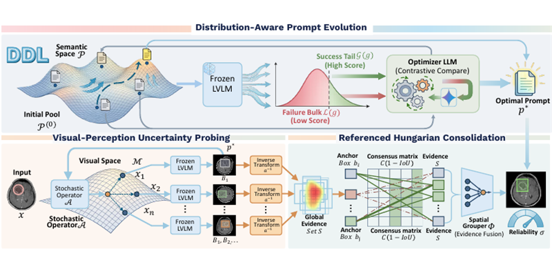
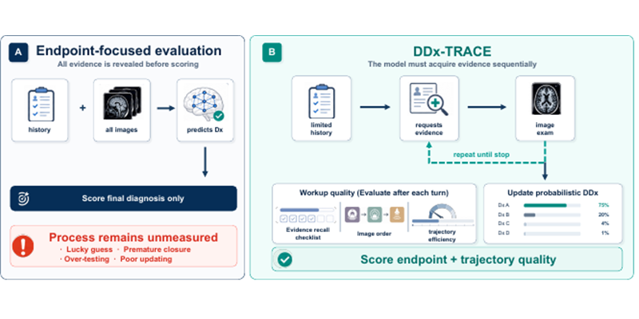
Accepted by NeurIPS 2026 Evaluation Track.
Jiazhen Pan, Wenjun Shen, Jun Li, Julian Canisius, Felix Bitzer, Paula Roßmüller, Jiarui Yang, et al.
[paper]
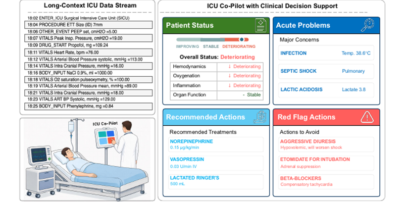
Accepted by NeurIPS 2026 Evaluation Track.
Chenguang Shen, Wenjun Shen, Tobias Susetzky, Jun Li, Yixin Liu, Xi Zhang, Zeyu Gong, Daniel Rueckert, et al.
[paper]
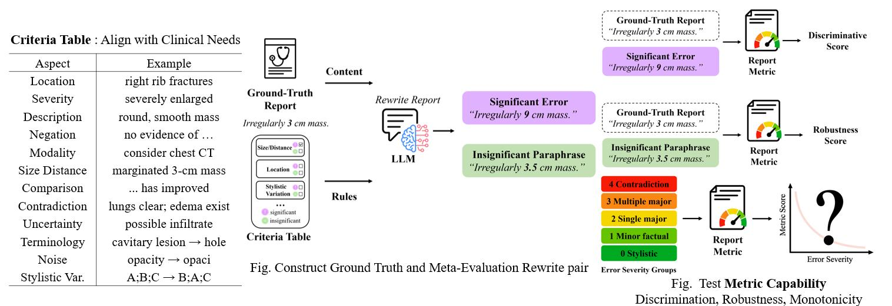
Accepted by EMNLP 2025.
Ruochen Li*, Jun Li*, Bailiang Jian, Kun Yuan, Youxiang Zhu
[paper]
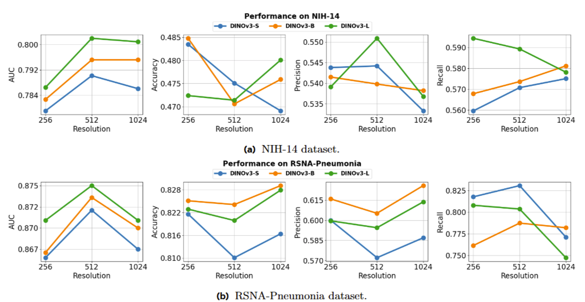
Che Liu, Yinda Chen, Haoyuan Shi, Jinpeng Lu, Bailiang Jian, Jiazhen Pan, Linghan Cai, Jiayi Wang, Yundi Zhang, Jun Li, Cosmin I. Bercea, Cheng Ouyang, Chen Chen, Zhiwei Xiong, Benedikt Wiestler, Christian Wachinger, Daniel Rueckert, Wenjia Bai, Rossella Arcucci
[paper]
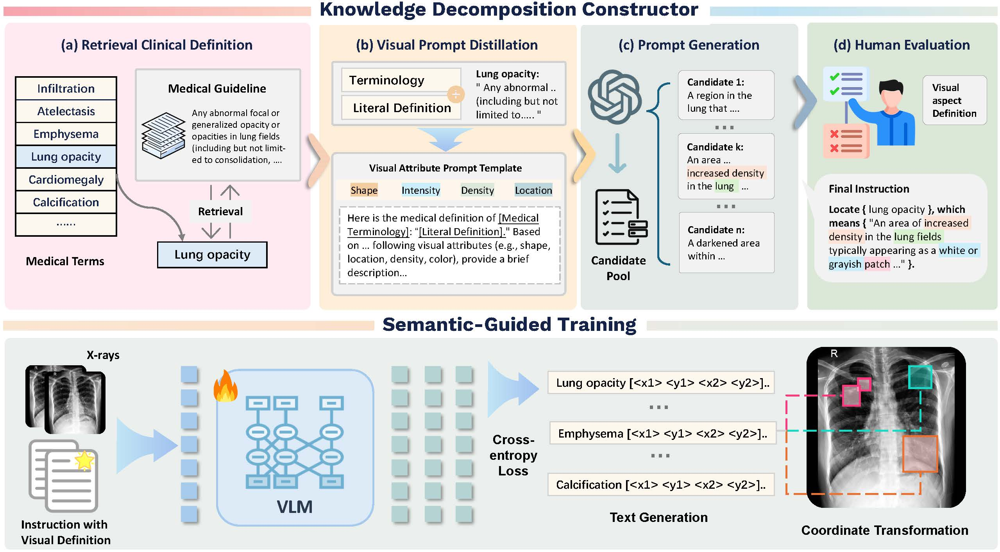
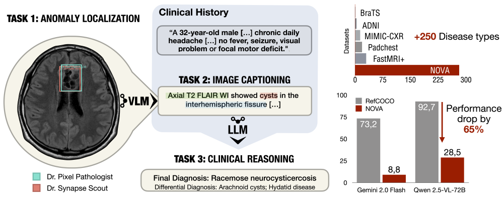
Accepted as Oral paper by NeurIPS 2025 Datasets and Benchmarks Track.
Cosmin I. Bercea, Jun Li, Philipp Raffler, Evamaria O. Riedel, Lena Schmitzer, Angela Kurz, Felix Bitzer, Paula Roßmüller, Julian Canisius, Mirjam L. Beyrle, Che Liu, Wenjia Bai, Bernhard Kainz, Julia A. Schnabel, Benedikt Wiestler.
[paper]
[huggingface]
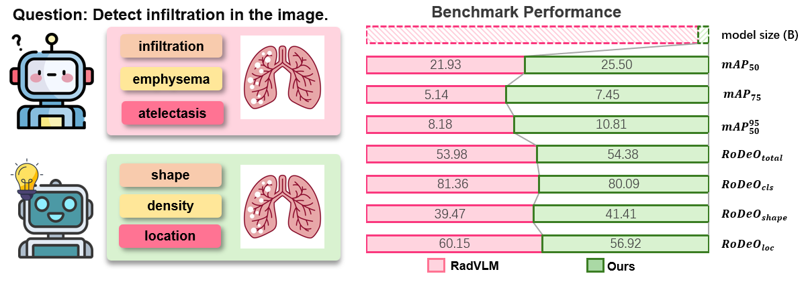
Jun Li, Che Liu, Wenjia Bai, Rossella Arcucci, Cosmin I. Bercea, Julia A. Schnabel.
[paper]
[project]
[huggingface]
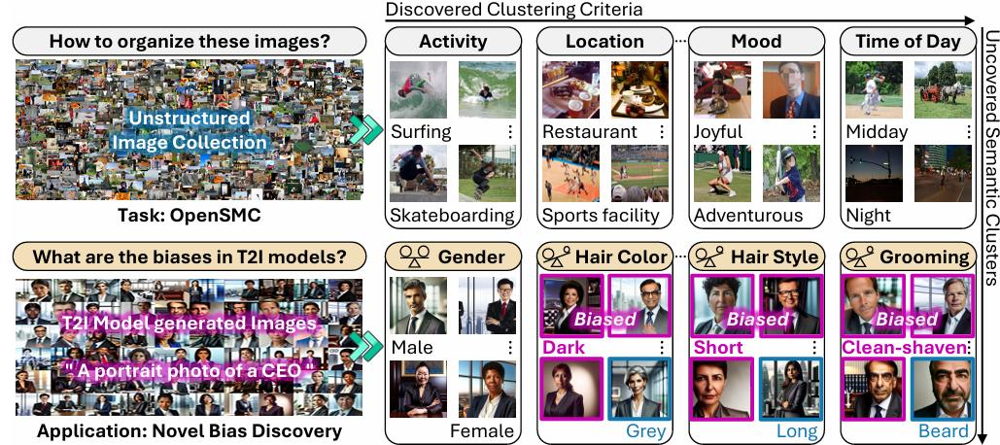
Accepted by CVPR 2026 Findings.
Mingxuan Liu, Zhun Zhong, Jun Li, Gianni Franchi, Subhankar Roy, Elisa Ricci.
[paper]
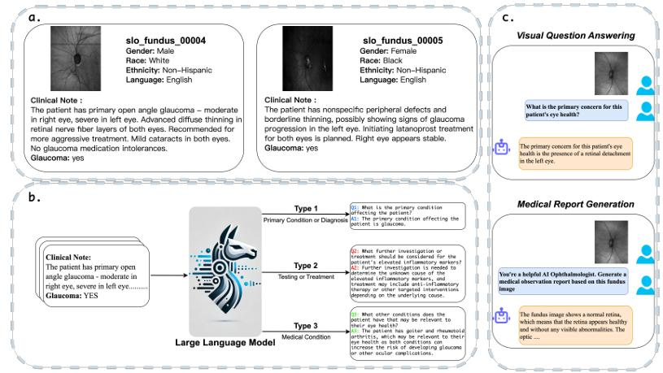
Peiran Wu, Che Liu, Canyu Chen, Jun Li, Cosmin I Bercea, Rossella Arcucci.
[paper]
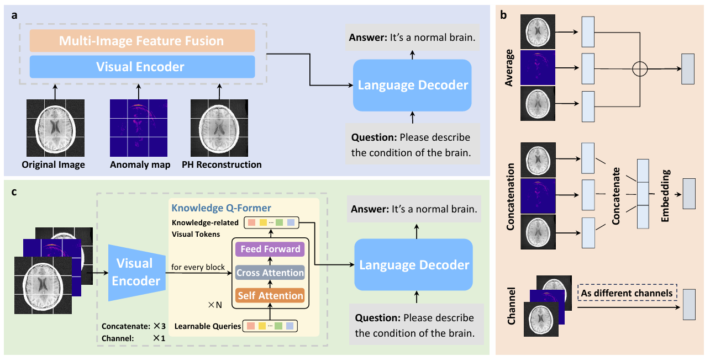
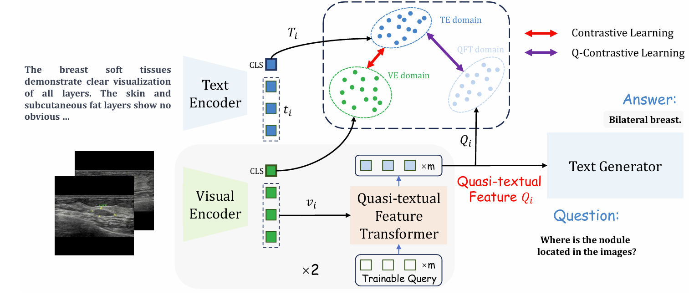
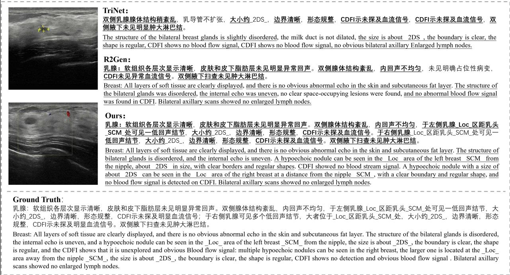
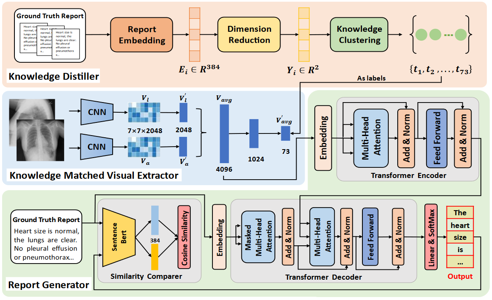
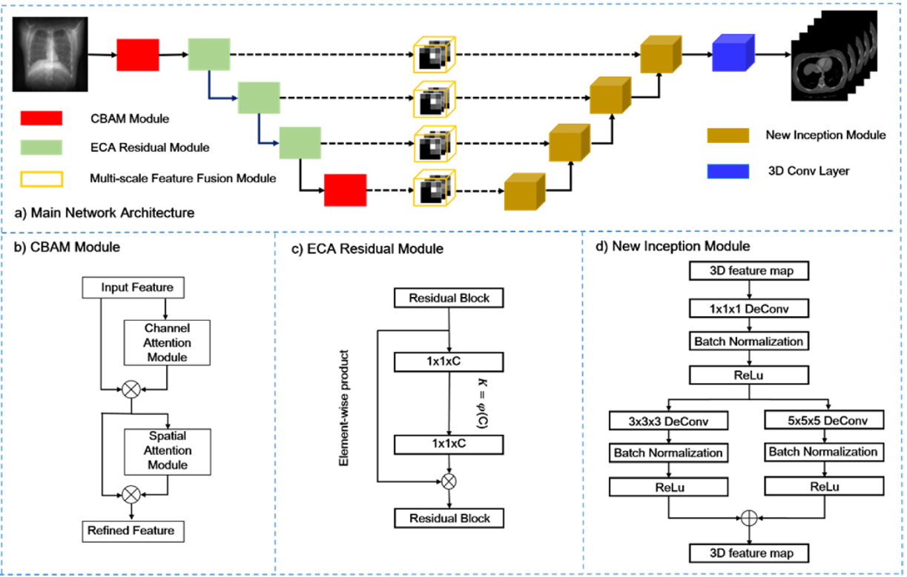
Computerized Medical Imaging and Graphics (CMIG), 2022.
Zhiqiang Tan, Jun Li, Huiren Tao, Shibo Li, Ying Hu.
[paper]
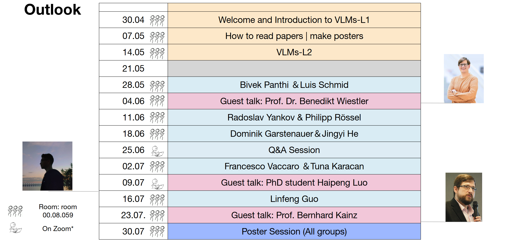
- (S 25) Master seminar, Technical University of Munich.
- Course ID: IN2107, IN45069.
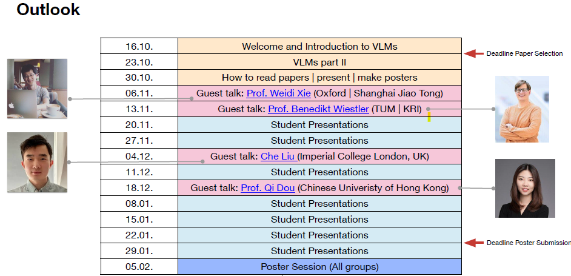
- (S 24/25) Master seminar, Technical University of Munich.
- Course ID: IN2107.


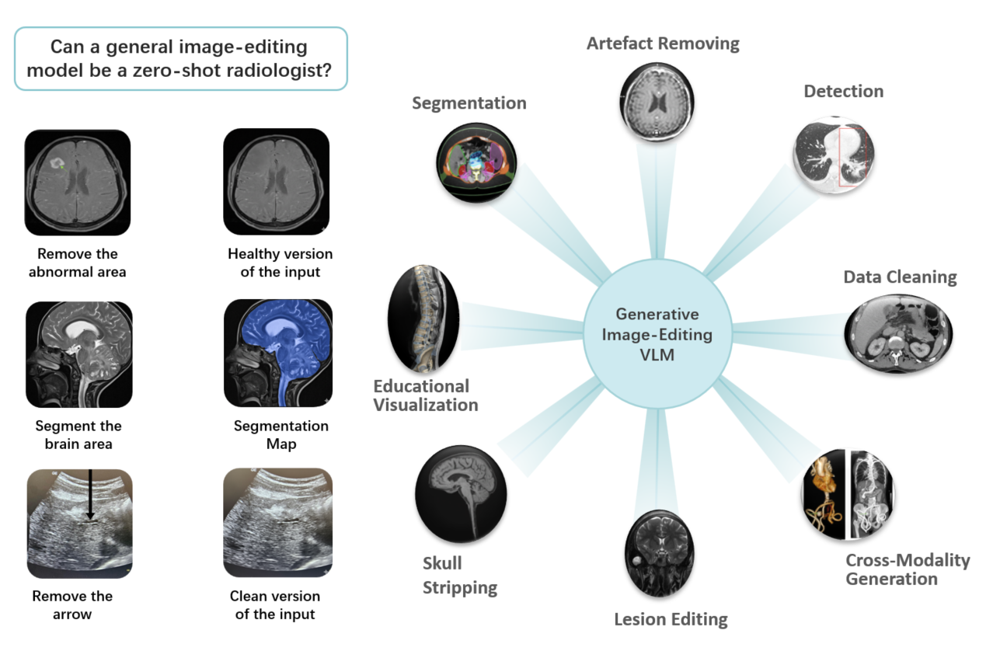
- A comprehensive collection of resources for Nano Banana framework applied to medical imaging tasks.
- Includes implementations, benchmarks, and best practices for medical image analysis.
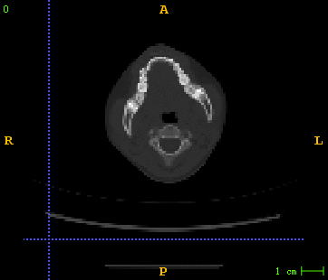
- This project focuses on exploring techniques for reconstructing 3D CT images from 2D X-rays.
- Project worked at Shenzhen Institutes of Advanced Technology, Chinese Academy of Sciences.
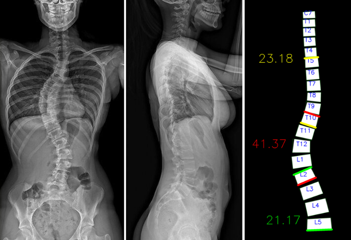
- Automatic and semi-automatic Cobb angle measurement tool for spinal X-ray images (coronal & sagittal planes), implemented with OpenCV + NumPy.
- Project worked at Shenzhen Institutes of Advanced Technology, Chinese Academy of Sciences.
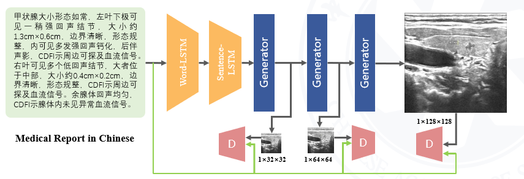
- Using GAN to generate ultrasound scan from ultrasound repots.
- Project worked at Shenzhen Institutes of Advanced Technology, Chinese Academy of Sciences.
- Teaching:
- Reviewer:
- Medical Image Analysis (MedIA), Reviewer, 2026
- IEEE Transactions on Medical Imaging (TMI), Reviewer, 2026
- ACM Computing Surveys (ACM CSUR), Invited Reviewer, 2025. (Impact Factor:28.0)
- AAAI Conference on Artificial Intelligence (AAAI), Reviewer
- Information Processing in Medical Imaging (IPMI), Reviewer
- International Conference on Machine Learning (ICML) 2026
- International Conference on Medical Image Computing and Computer-Assisted Intervention (MICCAI) 2024, 2025, 2026
- Workshop Organizer:
- MultiTab 2026: MICCAI Workshop on Multimodal Learning with Medical Tabular Data
- Roles:
- Junior Member Representative, Munich Center for Machine Learning (MCML)
- Academic Visits:
- MCML UK delegation visit to Imperial College London, University of Oxford, University of Cambridge, King's College London, and University College London, 2026
- Research visit at Imperial College London, hosted by Prof. Wenjia Bai's group, 2026
- Invited visit to Google DeepMind for a research discussion, 2026
- Talks and Presentations:
- Research talks during the MCML UK delegation visit at Imperial College London, King's College London, and University College London, 2026
- Activities:
- International Summer School in Computer Vision (ICVSS), Sicily, 2024